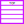

Algorithms
From a simple word document to Google's search engine
They are found everywhere
Then what about visualising them
This website will give you a basic understanding
Of all the popular algorithms by visualization
Various sorting techniques are used for
arranging data in either ascending or
descending order. In this section we visualize
these sorting algorithms -
❯ Bubble Sort
❯ Quick Sort
❯ Merge Sort
❯ Selection Sort
These are the most commonly used sorting algorithms.
When we do a search on Google, the search engine
uses a complex sorting algorithm which is fast
and efficient. Then it sorts the websites and they are presented to us
The visualizer provides pseudocode for all the algorithms.
Binary Search Trees
Binary Search Trees fall in the category of data structures.
It is often called as BST. Like trees, BST also have a root.
It is called root node. Using BST's root node we can access any other node or data in the tree.
All operations in BST are super fast
The visualizer can do these algorithms with animation -
❯ Insert a node
❯ Delete a node and
❯ search for a value
It also provides the pseudocode for the algorithm
Linked List
Linked List is one of the the most used data structure. In array
is that in array memory is pre-determined. But with linked list the memory allocation is dynamic.
Linked List has a head node which points to the next node and so on.
The visualizer can -
❯ Insert a node
❯ Delete a node
❯ Search for a node and
❯ Transverse the list
The visualizer also provides the pseudocode for the algorithm
Stack

Stack is known as a LIFO(Last In First Out) data structure.
That means the node that comes first will come first.
It is mostly used for solving mazes.
The Stack has a main node and it is called the top node. We only have access to the top node and its value. Adding a node changes the top to new node and same for deletion
The visualizer can -
❯ Push a value (adding a value)
❯ Pop a value (removing a value)
❯ Peek (Get element at top node) all with animations
The visualizer also provides the pseudocode for the algorithm